5.2 设备管理
设置连接设备的通信参数，通信参数正确才能够与设备正常通信，包括系统中的设置和设备中的设置。通信成功后就能查看到已连接设备的信息并能对设备进行远程监控、上传、下载等操作。
系统支持门禁、考勤、消费系统，所以连接设备时分为新增门禁控制器、新增考勤机、新增消费设备的操作。此外，门禁控制器新增也可以通过搜索查看连接至网络的设备，直接在搜索结果中添加即可；具有Webserver功能的考勤机只需在设备中进行对应设置后，即可自动添加到本系统中。
5.2.1 新增门禁设备
门禁控制器新增有以下两种方式：
1、手动添加门禁控制器
（1）、点击【设备】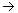【设备】【新增】，进入选择设备类型页面：
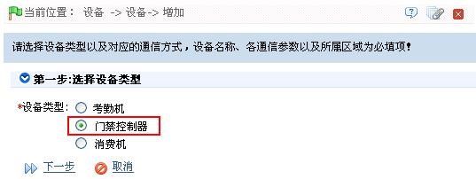
（2）、选择“设备类型”为“门禁控制器”，然后单击【下一步】按钮，进入添加设备信息页面：
 通讯方式为TCP/ IP
通讯方式为TCP/ IP
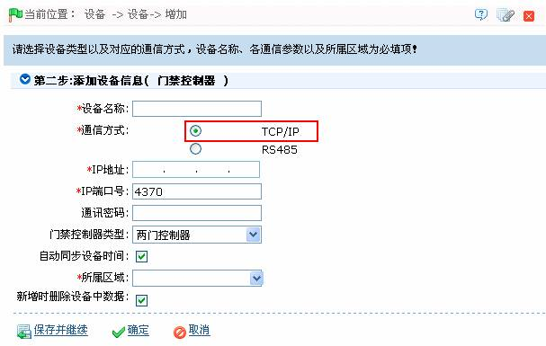
根据需要设置各参数，具体设置方法如下：
设备名称：输入设备名称。
IP地址、IP端口号：输入设备的IP地址和端口号（默认为4370）。
通讯密码：任意字符，最多15位（不能包含空格）。只有在新增设备时才可以输入该字段的值，主要用于新增已经设置过通讯密码的设备。编辑设备时无法修改该密码，用户需要使用【修改通讯密码】操作来修改。请参考6.3.1 门管理。
说明：新出厂设备以及初始化后的设备，通讯密码为空，此处无须填写。
门控制器类型：选择门控制类型，单门、两门或四门控制器。
- 切换为两门双向：只有当“门控制器类型”选择为四门控制器时，才会出现此项，默认为不选中。该参数用于将四门单向的门禁控制器切换为两门双向的门禁控制器（切换前后的设备扩展参数变化请参考门禁控制器的相关文档）。
说明：四门单向的门禁控制器切换为两门双向的门禁控制器后，如果需要切换回来，只能从系统中删除该设备，然后重新添加，添加时不勾选该参数前的复选框即可。
自动同步设备时间：默认勾选，即每次连接设备时都会同步设备时间与服务器相同；如果选择不自动同步，那么用户也可以手动同步设备时间；
所属区域：对设备进行区域划分，设置区域后，在实时监控时可以根据区域对设备（门）进行过滤。
新增时删除设备中数据: 选择该项，在新增设备成功后，系统将会自动清空设备中的所有数据（门禁事件记录除外）。如果添加的设备仅用作演示或者测试，可以勾掉该选项。
-
 通讯方式为RS485
通讯方式为RS485
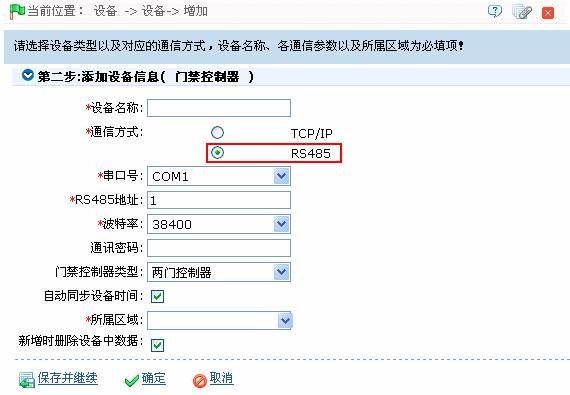
根据需要设置各参数，具体设置方法如下：
设备名称：输入设备名称（任意字符，最多20个字符组合）。
串口号：单击 按钮，在弹出下拉框中，选择设备使用的串口号（可选择为COM1-COM254），默认状态下选择为COM1。
按钮，在弹出下拉框中，选择设备使用的串口号（可选择为COM1-COM254），默认状态下选择为COM1。
RS485地址：设置RS485地址；即设备的机器号，相同串口号时，不可存在重复的485地址。
波特率：单击按钮，在弹出下拉框中，选择设备的波特率（可选择为9600、19200、38400、57600或115200），默认状态下38400。
（3）、设置完成后，点击【确定】按钮保存，系统将尝试连接当前设备：
若连接成功，将会读取到相应的设备扩展参数，此时如果用户选择的门禁控制器类型与实际的设备中对应参数值不对应，系统将提示用户，如果用户单击确定保存，将会保存设备实际的门禁控制器类型。
设备扩展参数：序列号、设备类型、固件版本号、辅助输入数量、辅助输出数量、门数量、设备指纹版本、读头数量等。
如果设备连接失败，用户仍然要添加设备到系统中，那么对应的部分设备参数及扩展参数将不会写入系统中，如序列号等，也就无法进行反潜、联动等设置，只有当设备重连成功并获取对应参数后方可进行此类设置。
说明：新增设备时，软件将会清空设备中已有的人员信息、时间段、节假日、以及门禁权限的相关设置（含门禁权限组、反潜、互锁、联动等），但不会清空设备中已有的事件记录。建议除非是设备中的数据不再使用，否则不要轻易删除软件中正在使用的设备，以免造成不必要的数据丢失。
对门禁控制器的设置要求：
 TCP/ IP通信要求：
TCP/ IP通信要求：
支持并开启TCP/ IP通信，设备与PC直接连接或共同连接至网络，查询设备的IP地址等信息；
 RS485通信要求：
RS485通信要求：
支持并开启RS485通信，设备与PC通过RS485相连，查询设备的串口号、RS485机器号（地址）、波特率等信息。
2、通过搜索门禁控制器新增设备
说明：此处为UDP广播的方式搜索门禁控制器，广播不能跨路由器。IP地址可以跨网段，但必须属于同一个子网，并且必须将网关与IP地址设置在同一网段。
备注：门禁控制器的默认IP地址可能会与网络中某台设备IP冲突，可修改其IP地址：点击某个设备后的【修改IP地址】，弹出对话框，输入新IP地址和其他参数（注：网关与IP地址必需在同一网段）。
具体方法如下：
1、在设备页面中，单击【搜索门禁控制器】图标，进入如下图所示页面：
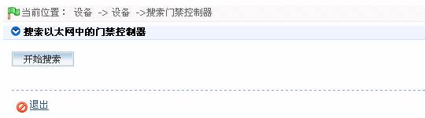
2、单击【开始搜索】按钮，开始搜索，待搜索完成后，显示搜索结果，如下图所示：
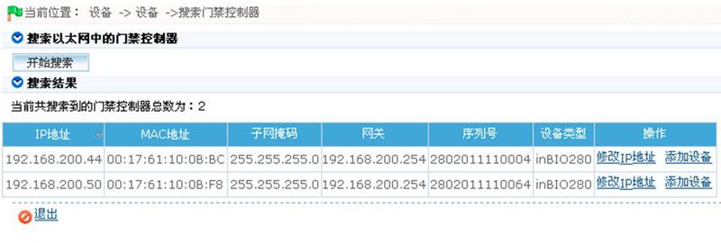
备注：用户可根据需要单击【修改IP地址】按钮，在弹出的设置框中，修改设备的IP地址。
3、单击设备所在行的“操作”下的【添加设备】按钮，弹出如下图所示自定义设备名称设置框：
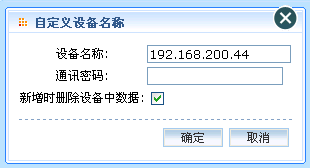
设备名称：自定义设备名称。
通讯密码：输入设备的通讯密码。若无密码，则不保持为空即可。
新增时删除设备中数据: 选择该项，在新增设备成功后，系统将会自动清空设备中的所有数据（门禁事件记录除外）。如果添加的设备仅用作演示或者测试，可以勾掉该选项。
4、设置完成后，单击【确定】按钮添加设备，并返回设备页面，此时设备列表中将显示该门禁控制器。
5.2.2 新增消费设备
用户可新增消费设备类型有：消费机、出纳机、补贴机。
点击【设备】【设备】【新增】，进入选择设备类型页面：
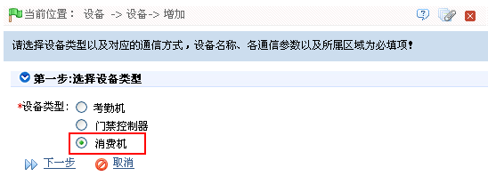
选择“设备类型”为“消费机”，然后单击【下一步】按钮，进入添加设备信息页面：
 新增消费机
新增消费机
（1）、在添加设备信息页面，选择“设备用途”为“消费机”，如下图所示：

根据需要设置各参数，具体设置方法如下：
设备名称：输入设备名称。
序列号：输入设备的序列号。
IP地址、IP端口号：输入设备的IP地址和端口号。其中端口号默认为4370。
所属区域：单击 按钮，在弹出的区域下拉框中，选择该消费机的所属区域。
按钮，在弹出的区域下拉框中，选择该消费机的所属区域。
白名单检查：选择是否开启“白名单检查”，开启白名单会设备会自动检测刷卡人员是否在白名单内，若不在则不能进行正常消费。选中，即开启白名单检查。
是否记账：选择是否开启记账功能。
操作员卡检查：设置是否进行操作员卡检查。打勾选中即选中，开启后，开机消费时，须刷操作员卡，否则该设备无法正常消费。
所属餐厅：单击 按钮，在弹出的餐厅下拉框中，选择该消费机的所属餐厅。
按钮，在弹出的餐厅下拉框中，选择该消费机的所属餐厅。
消费模式：点击按钮，在弹出的下拉列表中选择该设备的消费模式，可选择为金额、定值、键值、计次、商品和计时模式。
（2）、设置完成后，单击【确定】按钮，保存并返回设备页面，此时设备列表中将显示刚新增的消费机。
-
新增出纳机
（1）、在添加设备信息页面，选择“设备用途”为“出纳机”，如下图所示：
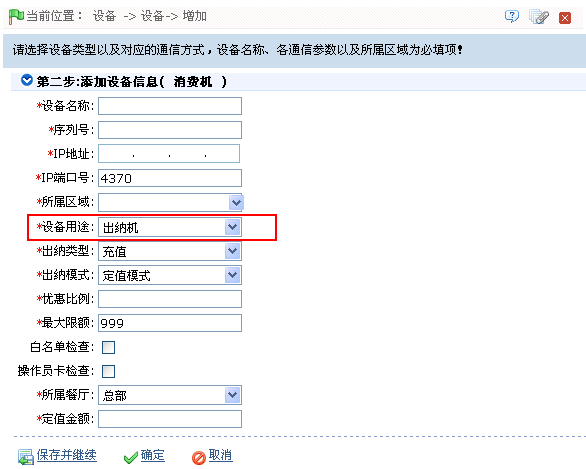
部分参数设置说明如下：
出纳类型：可以选择为“充值”或“退款”。
选择为“充值”模式时，需设置以下两项参数：
-
优惠比例：设置优惠比例。
-
最大限额：设置充值后，允许的最大卡余额，默认为999。
出纳模式：单击 按钮，在弹出的下拉列表中选择出纳模式，可以选择为“定值模式”或“金额模式”。
按钮，在弹出的下拉列表中选择出纳模式，可以选择为“定值模式”或“金额模式”。
选择为“定值模式”时，需设置以下参数：
-
定值金额：设置定值金额。（仅当出纳模式选择为“定值模式”时，才出现该设置项。）
（2）、设置完成后，单击【确定】按钮，保存并返回设备页面，此时设备列表中将显示刚新增的出纳机。
-
新增补贴机
（1）、在添加设备信息页面，选择“设备用途”为“补贴机”，如下图所示：
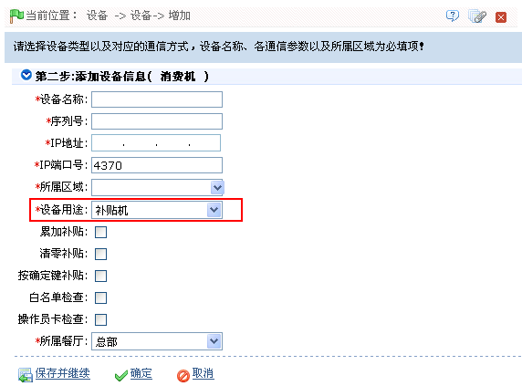
部分参数设置说明如下：
累加补贴、清零补贴（仅IC消费）、按确定键补贴（仅IC消费）：设置补贴的处理方式，具体设置方法和效果，如下图所述：
-
累加补贴：多次下发到补贴机的金额累加。（若非“累加补贴”，则最新的补贴金额覆盖原来的补贴金额。）例如：某张卡中已有一条10元的未补贴记录，如果再从软件中下发一条20元的补贴记录，经过累加处理方式后，补贴机中该卡的补贴金额为10+20=30，若非“累加补贴”，则补贴机中该卡的补贴金额为20。
-
清零补贴（仅IC消费）：将补贴机中的补贴金额写入卡中，卡上原有金额被清除。若非“清零补贴”，则补贴机中的补贴金额加上卡上原余额，写入卡中。例如：一张有20原余额的卡，从补贴机上领取10元补贴，若为“清零补贴”，则此时卡余额为10元；若非“清零补贴”，那么此时卡余额为20+10=30。
-
按确定键补贴（仅IC消费）：补贴时，需在补贴机上按“确定”键，补贴流程才完成。若非“按确认键补贴”，则在补贴机上直接刷卡后，即完成补贴流程。
备注：当用户同时选中累加补贴、清零补贴和按确定键补贴时，先清除卡里面的钱，再把累加的补贴金额充进卡里，然后按确定键，才算补贴成功。
（2）、设置完成后，单击【确定】按钮，保存并返回设备页面，此时设备列表中将显示刚新增的补贴机。
注意：新增设备时需将设备连接至电脑，以便同步消费模式。
5.2.3 新增考勤设备
考勤设备新增有以下两种方式：手动添加设备和自动添加设备。
1、手动添加设备
（1）、点击【设备】【设备】【新增】，进入选择设备类型页面：
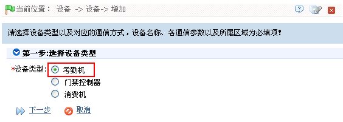
（2）、选择“设备类型”为“考勤机”，然后单击【下一步】按钮，进入添加设备信息页面：
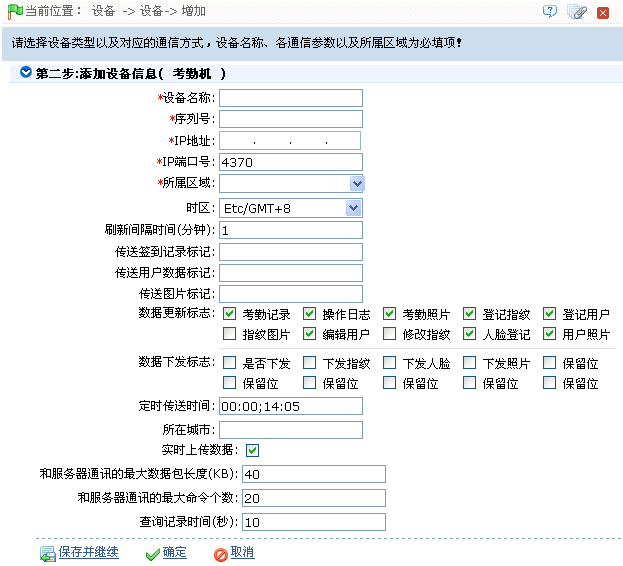
根据需要设置各参数，具体设置方法如下：
设备名称：任意字符，最多20个字符组合。
序列号：输入设备序列号。
IP地址、IP端口号：输入设备的IP地址和端口号。以太网方式的默认为4370。
所属区域：单击按钮，在弹出的区域下拉框中，选择该考勤机的所属区域。
时区：选择不同的时区，考勤设备的时间将与该时区的标准时间自动同步。
刷新间隔时间：设置设备自动刷新考勤数据时间，单位秒。
传送签到记录标记：系统参数，用户不需填写。
传送用户数据标记：系统参数，用户不需填写。
传送图片标记：系统参数，用户不需填写。
数据更新标志：从左至右依次为考勤记录、操作日志、考勤照片、登记指纹、登记用户、指纹图片、编辑用户、修改指纹、人脸登记和用户照片。如果打勾选中，则更新该项所表示的数据；若不选中，则不更新该项数据。
定时传送时间：设置设备自动向系统传送数据时间，格式MM:SS，设置多个时间请用分号分隔。
实时上传数据：是否实时上传数据，是则勾选。
和服务器通讯的最大数据包长度：设置设备向系统传送数据时的最大包长，默认40。
和服务器通讯的最大命令个数：设置系统向设备下发命令的最大个数，默认20。
查询记录时间(秒)：默认设为10。
（3）、设置完成后，单击【确定】按钮添加设备，并返回设备页面，此时设备列表中将显示该门禁控制器。
注意：如果在某台机器上新增人员数据，该人员上传到服务器时，会自动同步到服务器上已有的与人员同一区域的其他设备中。
2、自动添加设备
某些型号的考勤设备，不需在系统中进行添加设备操作，只需在设备的相关菜单中进行设置，即可通过http连接到系统。在设备连至互联网后，系统的设备列表中即可显示该考勤设备。具体操作请参考相关设备用户手册。
5.2.4 设备维护
-
同步软件数据到设备
将服务器中的数据同步到设备中（一般情况下只有在由于客观因素（如网络异常或其他情况）导致设备中数据和服务器不一致时才需要使用该操作。）。
在设备列表中，选中需同步数据的设备，点击【同步软件数据到设置】按钮，进入同步数据的确认页面，点击【确定】开始同步。
重要提示：同步软件数据到设备操作，会先删除设备中既有的数据（不包括事件记录），然后重新下载所有的设置信息，进行该操作时尽量保证网络的通畅，避免断电等状况发生。另外，当设备开始正常运行后，请慎重使用该操作，可选择在较少人使用的时段进行操作，以免影响正常使用。
-
重启设备：重新启动设备。
在设备列表中，选中重启的设备，点击【重启设备】按钮，进入重启设备的确认页面，点击【确定】重启设备。
-
编辑设备
点击“设备名称”，或点击设备所在行“相关操作”下的【编辑】，进入编辑设备页面。由于设备分为门禁设备、消费设备和考勤设备，所以编辑时按设备分为以下两种情况：
- 以上参数的含义与设置方式，请参见设备新增过程中的介绍。其中灰色项目为不可编辑项目。设备名称不可与其他设备名称重复。
- 门禁控制器的设备类型不允许修改，如果类型错误，需要用户手动删除该设备后重新添加。
-
删除设备
具体操作方法如下：
1、单击选中需删除的设备，然后单击设备列表上方的【删除】按钮，或直接单击设备所在行的“相关操作”下的【删除】按钮，进入如下图所示的删除设备确认页面：
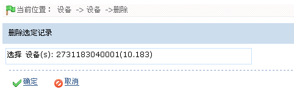
2、单击【确定】按钮，删除被选定的设备，并返回设备页面，此时设备列表中将不再显示已删除的设备。